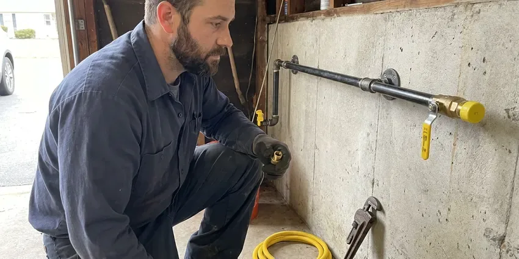

Water Heater Expansion Tank Installation in Tigard, OR
JFL Plumbing installs water heater expansion tanks in Tigard, OR that absorb thermal expansion and protect your tank, fixtures and supply lines.
- Fast, Reliable Service
- Upfront Pricing
- Local Tigard Team
- Licensed Local Plumbers

Protect Your Plumbing, Call Us in Tigard, OR.
Keep your water heater running efficiently and safely with our professional installation services.
Your Go-To for Water Heater Expansion Tank Installation in Tigard, OR
At JFL Plumbing, we understand the plumbing challenges homes face in Tigard, OR. Our experienced technicians make sure your water heater expansion tank is correctly sized and installed according to local plumbing codes, safeguarding your investment and providing peace of mind.
Our expertise includes:
- Secure strapping and bracket support on the cold water line
- Precise expansion tank sizing and installation.
- Code-compliant expansion tank sizing and installation

Additional Plumbing Installation Services in Tigard, OR
We install water heaters, pumps, lines, and fixtures across Tigard, OR with precision workmanship that meets every local code.


Customers
Why Choose JFL Plumbing for Water Heater Expansion Tank Installation in Tigard, OR?
Without an expansion tank, the thermal expansion of heated water can create immense pressure, leading to leaks, burst pipes and damage to your water heater itself.
- Code Compliance, Many local plumbing codes require expansion tanks for new water heater installations to protect safety.
- Prevent Leaks, It lowers the risk of leaks and bursts caused by high pressure, saving you from potential water damage.
- Water Heater Lifespan, By smoothing out pressure swings, an expansion tank can significantly extend the life of your water heater.
Citywide Coverage
We install expansion tanks for homes throughout Tigard, whether the water heater sits in a garage, a utility closet or an attic. Our trucks carry several tank sizes so we can typically finish on the first visit.
Experienced Team
Our team includes highly trained, licensed plumbers with extensive experience in water heater expansion tank installation. They stay current on the latest Oregon plumbing codes and best practices.
Safety-First Approach
Safety and code compliance come first on every water heater expansion tank installation we perform. We adhere to all manufacturer guidelines and local Oregon plumbing codes.
Trusted Certified Tigard Plumbing Services Professionals
At JFL Plumbing, we take pride in providing certified plumbing services throughout Tigard, OR. Backed by leading industry credentials, our experienced plumbers combine technical skill with genuine customer care. Whether it is repair, installation, or maintenance, we follow strict safety and quality standards to deliver long-lasting results you can trust.
Call Us Now PHCC Plumbing Contractor Recognition
PHCC Plumbing Contractor Recognition Better Business Bureau (BBB) Accreditation
Better Business Bureau (BBB) Accreditation Angi Certified Pro
Angi Certified Pro ISO 9001 Quality Management Certification
ISO 9001 Quality Management CertificationReliable Water Heater Expansion Tank Installation Services in Tigard, OR
Code-Compliant Installations in Tigard, OR
Local plumbing codes in Tigard, OR frequently require expansion tanks, particularly when a backflow preventer or pressure reducing valve creates a closed system. Permits are usually required for water heater replacements, sewer line work, new fixtures and remodels that move plumbing. JFL Plumbing stays up to date with current regulations and makes sure every expansion tank installation is fully compliant. We obtain any required permits and perform installations that pass inspection, safeguarding your home and avoiding fines or insurance issues. Trust us for installations that meet or exceed all local requirements.

Standard Water Heater Expansion Tank Installation in Tigard
Our standard installation service covers traditional tank-style water heaters, with the expansion tank correctly tied into your cold water supply line. We use high-quality, pre-charged diaphragm tanks designed to absorb thermal expansion efficiently. This keeps excessive pressure from building up in your system, which is key for prolonging the life of your water heater and preventing damage to fixtures and appliances. We always test the system carefully after installation to confirm proper performance and compliance with local Tigard regulations.
Commercial Expansion Tank Installation in Tigard, OR
Commercial properties in Tigard, OR often have larger water heaters and more complex plumbing systems, making expansion tank installation even more important. Higher hot water demands mean greater thermal expansion. We install commercial-grade expansion tanks built to withstand heavy usage and larger water volumes, following commercial plumbing codes. Our experienced plumbers limit disruption to your business while performing efficient, compliant installations that protect your equipment.
Preventing Water Heater Damage in Tigard
Thermal expansion is a common cause of premature water heater failure in Tigard homes. Without an expansion tank, constant pressure swings stress the water heater's tank, connections and internal components, leading to leaks, reduced efficiency and a shorter lifespan. Our installation service solves this issue, providing a buffer that protects your investment. This small addition can save you thousands in future water heater repair or replacement costs.
Tank Sizing and Placement in Tigard
Correct sizing and placement are key to an effective water heater expansion tank in Tigard. An undersized tank will not provide adequate protection, while an oversized one is an avoidable expense. We carefully calculate the required tank volume based on your water heater's capacity, system pressure and average water temperature. Placement matters too, usually near the water heater on the cold water inlet line, with easy access for future maintenance or inspection.
Brands and Tank Materials in Tigard, OR
We install potable-rated thermal expansion tanks from brands such as Watts, Amtrol and A.O. Smith. Potable tanks use a butyl diaphragm and a lined interior so water never touches bare steel. Many rural homes rely on private wells, and owners around Tigard benefit from testing for iron, hardness and other typical concerns. Stainless steel connections resist corrosion from hard or aggressive water. We avoid tanks designed only for hydronic heating, since they are not approved for drinking water.
Expansion Tank Replacement in Tigard, OR
Expansion tanks wear out over time as the internal bladder or diaphragm fails and the tank fills with water. A waterlogged tank feels heavy, and tapping it produces a dull sound all the way up instead of a hollow top. Pressing the air valve and getting water instead of air is a clear sign it has failed. We replace failed tanks with a correctly sized new unit and check the precharge before installing.

Expansion Tank for Tankless Water Heaters in Tigard, OR
While tankless water heaters do not store hot water, an expansion tank can still be beneficial, and sometimes required, in Tigard, OR plumbing systems. If your tankless unit is part of a closed system, an expansion tank can help absorb pressure spikes from the cold water supply or reduce wear on components. Our plumbers assess your tankless setup and local codes to determine whether an expansion tank is necessary and recommend the ideal solution for your system's longevity and performance.
Water Heater Expansion Tank Installation Near Me in Tigard, OR
When you search for 'water heater expansion tank installation near me' in Tigard, OR, JFL Plumbing is your reliable local choice. Our team is strategically located to provide fast response times and efficient service to homes and businesses throughout the area. We pride ourselves on being the trusted plumbing experts close to you.
Don't delay protecting your plumbing system. For prompt and professional water heater expansion tank installation near me, call JFL Plumbing. We are committed to delivering high-quality workmanship and lasting solutions right here in Tigard.
JFL Plumbing at a Glance
- Fully licensed plumbing team covering Tigard, OR
- 24/7 emergency service with same-day scheduling
- Upfront, flat-rate pricing before work begins
- 4.8-star rated by 657+ Oregon customers
Tigard Map
Tigard Information
- Population
- 55,590
- Area codes
- 503/971/541
- Service area
- Tigard and communities within 40 miles
- Nearby
- Beaverton, Lake Oswego, Aloha, Bethany
Many rural homes rely on private wells, and owners around Tigard benefit from testing for iron, hardness and other typical concerns. With municipal water pressure that can swing up and down, a water heater expansion tank is a key part of protecting your home's plumbing system in Tigard, OR.
Expert Services
Trust our professionals for reliable JFL Plumbing solutions in Tigard, OR.
Our Specialized Plumbing Services in Tigard, OR
At JFL Plumbing, we provide a complete range of plumbing services across Tigard, OR. From leak detection to full system installations, our team ensures fast, precise, and affordable service for both residential and commercial properties. Explore our core services below:


How Our Water Heater Expansion Tank Installation Process Works in Tigard, OR
Our installation process for water heater expansion tanks is straightforward and designed to minimize disruption to your home in Tigard.
Request a Quote
Call (971) 333-7694 and tell us about your water heater and any symptoms like a dripping relief valve. We will schedule a visit and give you an upfront price.
Test and Size
We measure your static pressure, check the PRV and relief valve, and choose the right tank size. The tank's air charge is adjusted to equal your pressure.
Install and Verify
We install and support the tank on the cold supply, then run the heater through a cycle. Pressure is monitored to confirm the system stays stable.
Frequently Asked Questions About Water Heater Expansion Tank Installation in Tigard
Most residential expansion tank installations cost $250 to $550 including the tank and labor. Attic installs, larger tanks or a new pressure reducing valve can bring the total to $600 to $1,000.
When water heats up, it expands. Without an expansion tank, this expanded water has nowhere to go, increasing pressure within your closed plumbing system. This constant pressure can quickly wear out water heater components and relief valves and even cause leaks or ruptures. The expansion tank absorbs this excess volume, protecting your whole system.
Yes, expansion tanks need occasional maintenance to keep working correctly. It is recommended to have the air pressure checked annually to match the incoming water pressure. This preventive check helps extend the life of the tank and your water heater.
A dripping temperature and pressure relief valve often means thermal expansion is pushing pressure too high. A failed or missing expansion tank is the most common cause.
While it might seem like a simple task, installing a water heater expansion tank involves working with pressurized water lines and getting the sizing and code compliance right. It is best to hire a licensed plumber for a safe, correct installation that avoids leaks or damage to your system.
A waterlogged tank feels heavy and sounds solid when tapped near the top. Water coming out of the air valve when pressed is a clear sign the bladder has failed.
Manufacturers usually offer one to five year warranties depending on the model. We also warranty our installation labor.
Yes, JFL Plumbing stands behind our work. We offer warranties on both the expansion tank itself, per the manufacturer's terms, and our installation labor. Specific warranty details will be explained during your consultation, so you can have confidence in our service.
What People Are Saying About Our Plumbing Experts?

Robert G.
The trenchless sewer replacement saved our front yard. They walked us through the camera inspection footage first so we knew exactly what we were paying for.
Sewer Line Replacement · Portland, OR
Laura S.
I scheduled a water heater replacement, and the team made the process smooth and affordable. The new unit works perfectly, and they cleaned up after completing the job.
Water Heater Replacement · Bethany, OR
Patricia H.
We had a slab leak that two other companies could not find. JFL Plumbing located it in under an hour, explained our options, and the price matched the quote to the dollar.
Slab Leak Repair · Portland, OR
Mark T.
When our office needed drain cleaning, JFL Plumbing provided quick, reliable service. The plumber arrived on time and made sure every drain flowed perfectly before leaving. Very satisfied.
Drain Cleaning · Lake Oswego, ORSofia M.
Two new toilets installed in one visit, no mess left behind, and the tech even adjusted a faucet he noticed was dripping. Fair pricing and really friendly.
Toilet Installation · Aloha, OR
Daniel K.
A pipe burst at 11 pm and they actually answered. The plumber showed up within the hour, shut everything down, and had us back to normal the next morning. Could not ask for more.
Emergency Plumbing · Aloha, OR